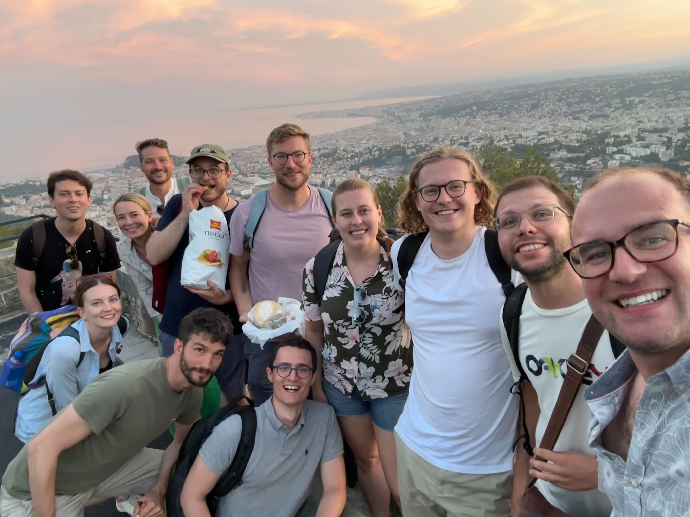

About Me

Bio: I'm Daniele Fasano and I'm a PhD student at the Observatoire de la Côte d'Azur in Nice in the ERC funded PROTOPLANETS team. I'm currently on an extended visit at the Max-Planck-Institut für Astronomy for my last year of the PhD.
Research Interests: My research focuses on the interactions between newly formed planets and the environment surrounding them. I combine theoretical models, both numerical and and analytical, of planet disc interactions with interferometric observations at sub-millimiter wavelengths using the Atacama Large Millimiter/sub-millimiter Array of continuum dust emission and gas line kinematics.
Publications: My ADS page
Research

Intro As a PhD student in the PROTOPLANETS group, I started my research projects within the exoALMA collaboration, an ALMA large program performing a planet hunting campaign in the sub-mm regime. I then moved towards my own personal projects studying the dust emission of PDS 70 and HD 34700.
I. Planet-driven spirals in protoplanetary discs: Limitations of the semi-analytical theory for observations
Detecting protoplanets during their formation stage is an important but elusive goal of modern astronomy. Kinematic detections via the spiral wakes in the gaseous disc are a promising avenue to achieve this goal. We aim to test the applicability of a commonly used semi-analytical model for planet-induced spiral waves to observations in the low and intermediate planet mass regimes. In contrast to previous works that proposed using the semi-analytical model to interpret observations, in this study we analyse for the first time both the structure of the velocity and density perturbations. We ran a set of FARGO3D hydrodynamic simulations and compared them with the output of the semi-analytic model in the code WAKEFLOW. We divided the disc into two regions. We used the density and velocity fields from the simulation in the linear region, where density waves are excited. In the non-linear region, where density waves propagate through the disc, we then solved Burgers' equation to obtain the density field, from which we computed the velocity field. We find that the velocity field derived from the analytic theory is discontinuous at the interface between the linear and nonlinear regions. After ~0.2 rp from the planet, the behaviour of the velocity field closely follows that of the density perturbations. In the low mass limit, the analytical model is in qualitative agreement with the simulations, although it underestimates the azimuthal width and the amplitude of the perturbations, predicting a stronger decay but a slower azimuthal advance of the shock fronts. In the intermediate regime, the discrepancy increases, resulting in a different pitch angle between the spirals of the simulations and the analytic model. The implementation of a fitting procedure based on the minimisation of intensity residuals is bound to fail due to the deviation in pitch angle between the analytic model and the simulations. In order to apply this model to observations, it needs to be revisited so that it can also account for higher planet masses. ADS link.
II. Inner disc and circumplanetary material in the PDS 70 system
The two giant protoplanets directly imaged in the dust-depleted cavity of PDS 70 offer a unique opportunity to study ongoing planet formation. Both planets have been detected in infrared thermal emission and in Hα, indicating active accretion. We calibrate and analyse archival ALMA Band 6 and 7 observations of PDS 70 from 2019, 2021, and 2023 to search for circumplanetary material and assess its motion. Using 2D visibility modelling of the high-resolution (~0.11"x0.08" in Band 6; ~0.05"x0.05" in Band 7) dust continuum from the outer disc, we subtract the model and image the cavity at multiple epochs. We re-detect compact dust emission around PDS 70 c in all datasets with >3.8σ significance, and tentatively detect emission near PDS 70 b at ~3σ in Band 6, with peak fluxes of 59±17μJy/beam and 46±14μJy/beam. The relative astrometry of the compact emission around PDS 70 c is consistent with the expected position of the planet between 2019-2023. We find a peak flux difference up to 64±34μJy/beam at 1σ, but Bayesian analysis indicates no significant variability. We detect no flux variability in the inner disc. The inferred dust mass near PDS 70 c and in the inner disc ranges from 0.008-0.063M⊕ and 0.04-0.31M⊕, respectively, consistent with prior estimates. Finally, we measure Band 6-7 spectral indices of 2.5±1.2 (PDS 70 c) and 3.2±0.5 (inner disc), suggesting that the inner disc emission is dominated by optically thin dust. ADS link.
Contact
Email:
OCA - daniele.fasano@oca.eu
MPIA - dafasano@mpia.de